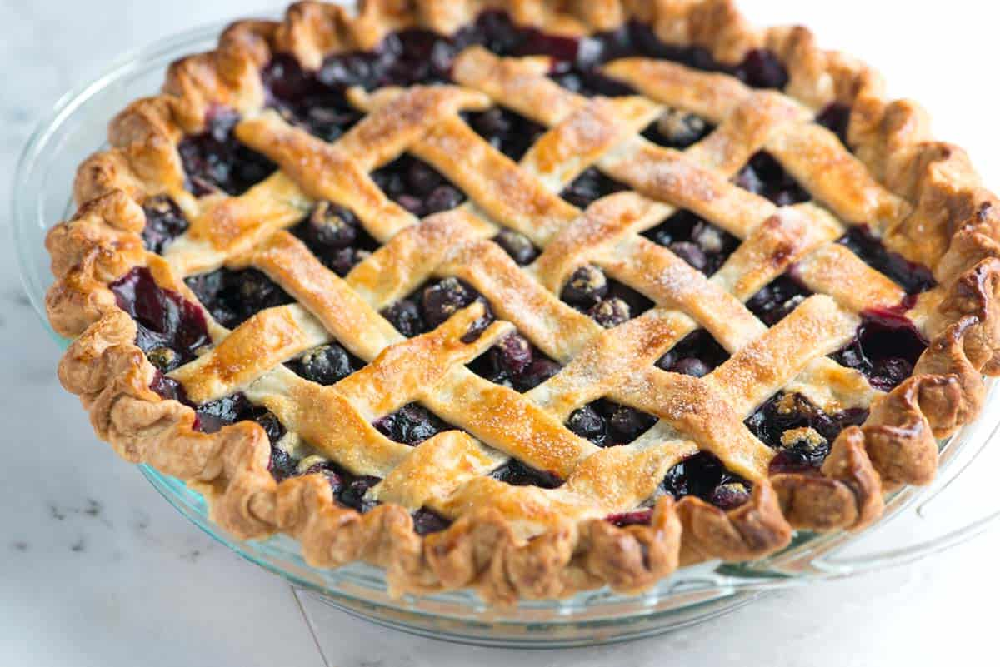

Blueberry Pie

I eat this pie for the antioxidants
This is a simple blueberry pie recipe that will surely delight and enchant your guests with its delicious taste and charming appearance. The recipe is simple, requiring only a handful of ingredients so that even a novice pie maker can exceed expectations. If you don't have access to a homemade pie crust then storebought will do fine, but make sure you have two portions. We'll need a spare for the lattice topping.
Ingredients
- 2 portions pie crust
- 1 pound of frozen or fresh blueberries
- 1/2 cup sugar
- 1/4 cup cornstarch
- lemon zest
Steps
- If using frozen blueberries defrost them before starting.
- Preheat oven to 400 degrees.
- Combine blueberries, sugar, corn starch, and lemon zest in a bowl and mix well.
- Lay one portion of your pie dough in a pie tin.
- Add filling.
- Cut the second portion of your pie dough into strips and lay them over the top of your filling, overlapping over one another to create a lattice.
- (Optional) Brush the top of your pie with a little egg white or milk and sprinkle with sugar.
- Bake pie for 30-45 minutes until the filling is set and the top is golden brown.